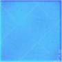
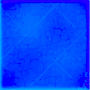

<div class="grille" #macro>
    <table class="table">
        <br>
        <tr *ngFor="let item of matriceDesMotsSurGrille; let i = index">
            <td *ngFor="let case of item; let j = index">
                <p class="indicesHorizontals" *ngIf="i == 0">{{ j + 1 }}</p>
                <p class="indicesVerticals" *ngIf="j == 0">{{ i + 1 }}</p>
                <input [attr.id] = "makeIDs(i,j)" class="tuile" (click)="printID($event)" [appDirectiveFocus] = "stalker">
                
                <ng-template #elseBlock1>
                    
                </ng-template>

                
                

                <p class="reponseLettre" *ngIf = "case.lettreDecouverte && case.lettre ; else elseBlock2">{{ case.lettre | uppercase }}</p>
                <ng-template #elseBlock2>
                    <p class="reponseLettre"></p>
                </ng-template>
            </td>
        </tr>
    </table>
</div>